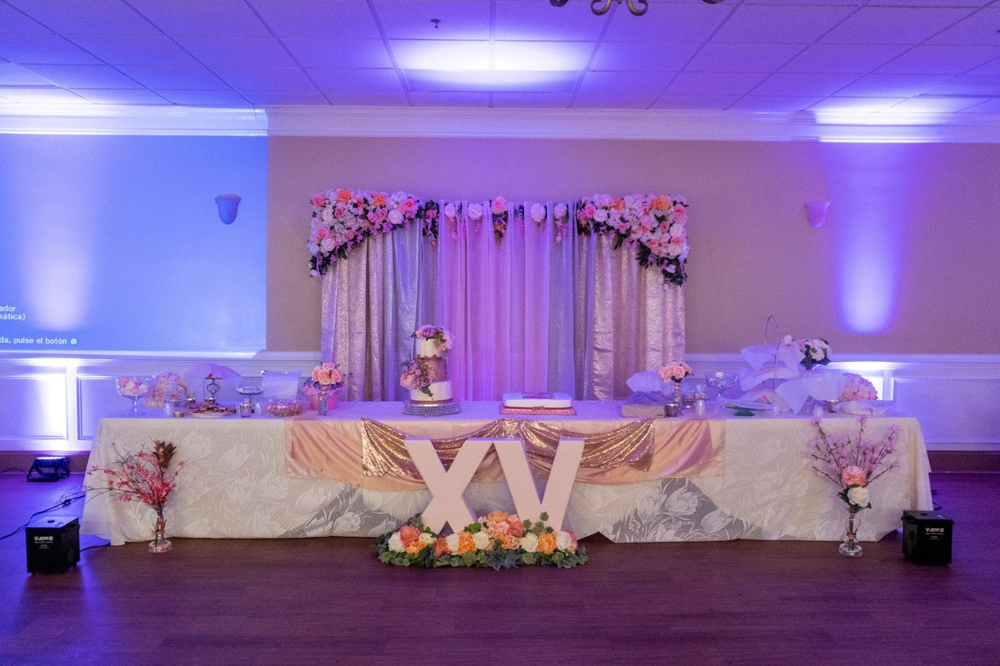
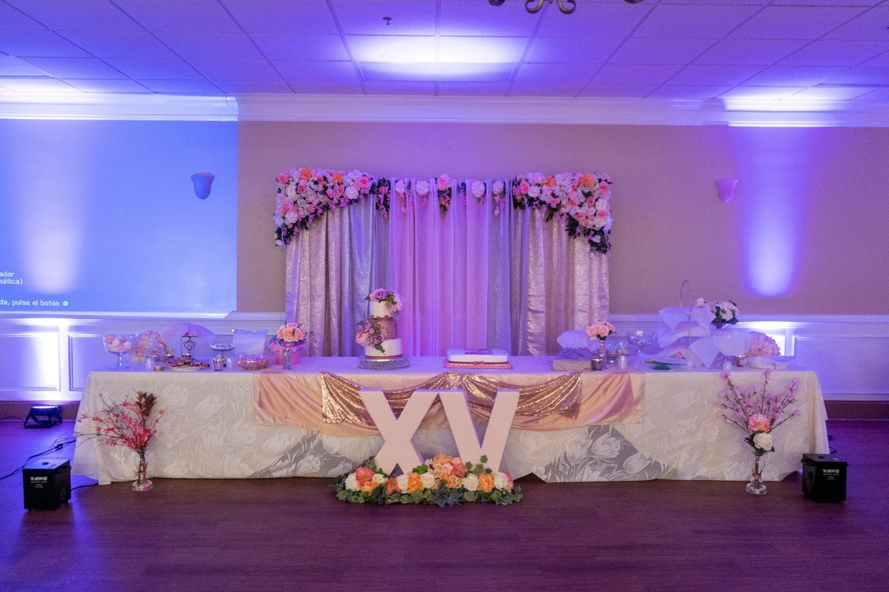

Licenciaturas 2 años 8 meses

1DERECHO
La Licenciatura en Derecho es una carrera que te permite influir como mediador de las leyes de México, es decir, el profesional podrá ser uno de los encargados de cuidar que se cumpla la justicia, así como canalizar y resolver los diferentes dilemas legales que se presentan en la sociedad..
2CONTADURIA PUBLICA
La Contaduría Pública, es una disciplina de carácter científico fundamentada en una teoría específica, que a través de un proceso obtiene y comprueba información financiera sobre eventos realizados por entidades económicas, es una actividad profesional desarrollada por expertos en cuestiones contables, fiscales.
3INGENIERIA EN SISTEMAS COMPUTACIONALES
La carrera de Ingeniería en Sistemas Computacionales ofrece las herramientas y la capacidad de afrontar el mundo actual y los conocimientos para forjar el futuro, permitiendo el desarrollo y la creación de nuevas aplicaciones o sistemas que puedan ser de ayuda para una empresa y la sociedad en general.
Galeria
 
